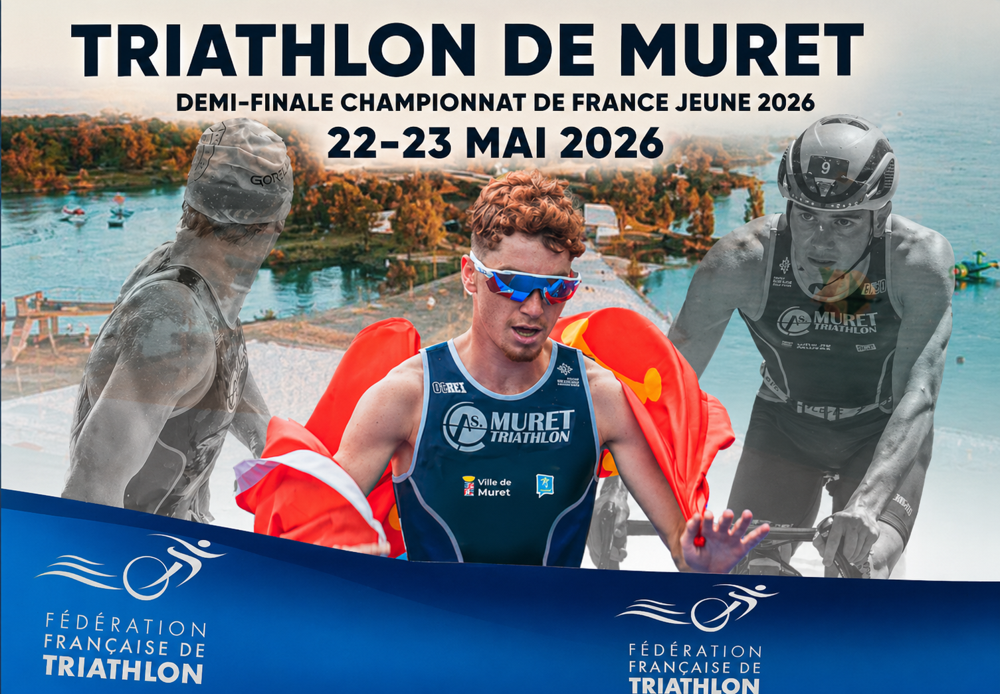
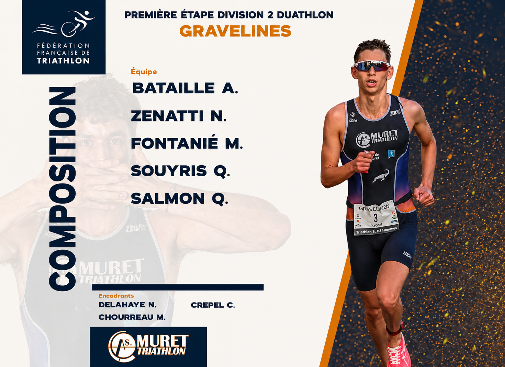

Une entrée historique pour le club. L'équipe hommes
prend le départ de la Division 2 duathlon à
Gravelines pour la première fois au niveau national.
12e place au classement général
Quentin Salmon 30e
Alexandre Bataille 32e
Quentin Souyris 50e · Noa Zenatti 56e

Le club te donne rendez-vous au lac des Bonnets pour
un week-end complet. Deux jours de course, tous les niveaux,
une ambiance club forte.
Samedi — Triathlon Open Swim Bike drafting
Course VTT enfants
Dimanche — Sélectif France Jeunes · Benjamins à Juniors